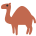
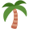
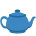
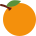
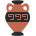

Aperçu à juger : rien n'est encore dans le jeu. Un événement d'une semaine, plus léger qu'Halloween :
décor du parcours, environ 30 questions faciles (Maroc, Algérie, Tunisie), 2 emojis d'avatar et une carte souvenir à gagner,
et une collection dans la boutique. Dates proposées : du mardi 3 au lundi 9 novembre (juste après Halloween).
1. Le parcours pendant l'escale

Escale au Maghreb ⏳ 6 j 14 h
114
113
112
111




Comme pour Halloween : fond couleur sable, bandeau en haut avec le temps restant, et les petits décors du parcours
deviennent 🌴 🫖 🕌 🐪 🍊 🏺 🌙 🏜️. Un tap sur un décor donne une anecdote sur le Maghreb (par ex. « Le thé à la menthe se sert
de haut pour faire de la mousse »). Pas de citrouilles cachées cette fois (plus léger).
2. Dans l'onglet Défis
🐪 Escale au Maghreb
Trouve 30 questions différentes · sessions de 10, sans gouttes ni cœurs
12 / 30 questions trouvées
Emoji Théière 10 ✓
Emoji Palmier 20
Carte + emoji Dromadaire 30
Même règle qu'Halloween : une question ratée reviendra dans une autre session. Pas de missions spéciales ni de badge
(pour rester léger) — dis-moi si tu en veux un.
3. La carte souvenir
Dromadaire 2026
Gagnée pendant l'Escale au Maghreb 2026.
Rangée dans « 🎉 Événements » de la collection, comme la Citrouille 2026 (hors des 180 cartes). Rien n'est marqué
« exclusif » : on pourra refaire l'escale plus tard pour les nouveaux joueurs.
4. La collection de la boutique : « Médina »
Collection Médina
En vitrine pendant la semaine de l'escale. Les 3 : 1 200 🪙 (prix habituels).
Cadre Zellige600 🪙
Fond Dunes600 🪙
Emoji Khamsa300 🪙
Cadre en mosaïque de zellige (carreaux verts et crème) avec une petite mosquée 🕌, fond coucher de soleil sur les dunes,
emoji khamsa (la « main de Fatma ») 🪬. Les objets à gagner (🫖 🌴 🐪) et ceux de la boutique sont différents.
Comme toutes les collections, elle pourra revenir plus tard en vitrine.
5. Exemples de questions (faciles, d ≈ 2)
Quelle est la capitale du Maroc ? Rabat
Quel plat mijoté porte le nom du récipient en terre au couvercle pointu dans lequel il cuit ? Le tajine
Quelle boisson chaude se sert traditionnellement avec des feuilles de menthe ? Le thé
Quel grand désert couvre la plus grande partie de l'Algérie ? Le Sahara
Quelle chaîne de montagnes traverse le Maroc, l'Algérie et la Tunisie ? L'Atlas
Quel village tunisien est célèbre pour ses maisons blanches aux portes bleues ? Sidi Bou Saïd
Comment appelle-t-on le marché traditionnel aux ruelles couvertes ? Le souk
Dans quelle ville marocaine se trouve la célèbre place Jemaa el-Fna ? Marrakech
Environ 30 questions (+ quelques rébus et drapeaux), faits vérifiés en ligne. Thèmes variés : villes, plats, monuments,
histoire, langue, sport (la Coupe d'Afrique, Zidane, Mahrez…).